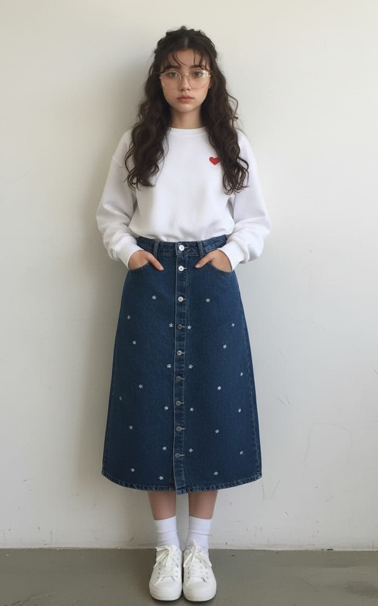
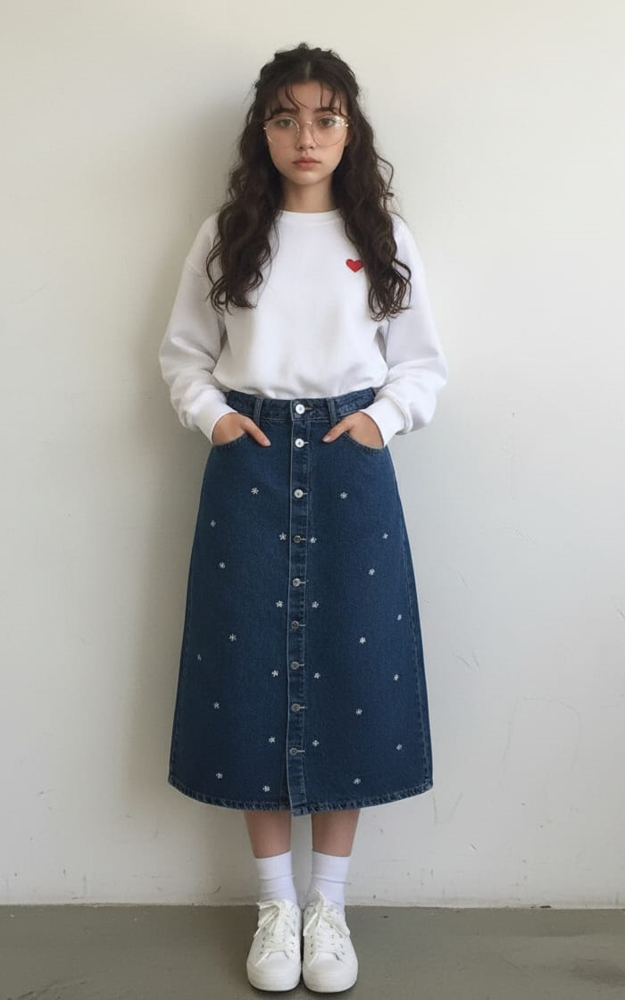

Noelle Catalina Tremblay
18
Edad Verde
Color 10/10
Cumpleaños
Edad Verde
Color 10/10
Cumpleaños
Persona introvertida e introspectiva. Observa más de lo que habla y siente con una intensidad silenciosa. Aunque no lo crea, casi siempre tiene respuestas profundas y acertadas.
Mayor miedo: Sentirse inútil para Dios.
Mayor sueño: Liberarse del miedo, volver a cantar y encontrar paz.
Hobbies: Pintar, escribir y leer.

 
